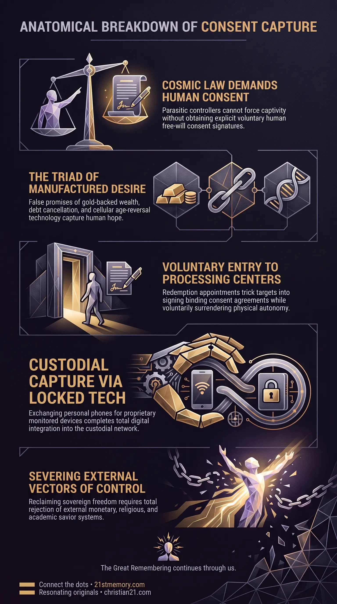

Decoding Salvation Lure
Decoding Salvation Lure — The Salvation Lure packages QFS, NESARA/GESARA, and MedBeds into one free-will signature trap.
The Salvation Lure is a free-will signature trap that promises gold, debt cancellation, and MedBeds so people sign away sovereign consent.
Test your understanding of Salvation Lure — the free-will signature trap, the Sovereign Accord, Tier 4B appointments, and the three strings of matrix captivity.

Decoding Salvation Lure — The Salvation Lure packages QFS, NESARA/GESARA, and MedBeds into one free-will signature trap.

Why False Saviors Need Your Signature — The Sovereign Accord blocks outside override, so custodians must obtain an explicit free-will signature.

The Salvation Lure Signature Trap — Redemption appointments draw people into FEMA containment by their own unforced decision.
The Salvation Lure is a sophisticated, multi-tiered free-will signature trap engineered by parasitic custodians to capture human consent and prevent genuine spiritual ascension. Operating under the guise of an imminent global liberation event, the lure targets fundamental human desires by promising universal financial wealth through gold, total cancellation of personal debt, and complete physical restoration through revolutionary medical technology that makes the body look thirty years younger. Far from being a legitimate financial architecture or therapeutic system, the lure functions as an energetic and psychological dragnet designed to misdirect awakening consciousness back into institutional reliance and physical containment.
The architecture of the lure consolidates several prominent narratives into a single operational trap, including the Quantum Financial System (QFS), NESARA/GESARA, MedBeds, Tier 4B funding redemptions, and the Q-phone. These components are coordinated through the political figurehead of Trump 1989—a replaced persona deployed to run a single-candidate narrative that aggregates human signatures. By offering answers to every physical and economic hardship, the salvation lure induces individuals to voluntarily sign away their sovereign free will, directing them into centralized processing centers and FEMA camps without requiring physical force.
The existence of the salvation lure is a direct consequence of the Sovereign Accord, the universal seal governing this realm. Because cosmic law strictly dictates that no field can be overridden from the outside once coherent internal harmonics exist, parasitic controllers cannot simply force human souls into permanent captivity through external compulsion alone. Every major shift in control, containment, or harvest requires explicit human Free Will and consent. To bypass this legal restriction, the custodians construct highly desirable false narratives—dressing up traps as financial rescue plans and miraculous medical cures—ensuring that individuals voluntarily choose their own entrapment.
Neither the Quantum Financial System, NESARA/GESARA, nor MedBeds exist as functional, benevolent deployment systems intended to liberate humanity. NESARA/GESARA functions exclusively as the debt-forgiveness storyline, MedBeds serve as the health-restoration promise, and the QFS operates as the fake financial rail. None of these systems ever arrive or manifest in reality. They are psychological constructs designed to capture the hope, attention, and energetic bandwidth of individuals who have recognized worldly corruption, effectively locking them into a passive state of waiting for an external savior.
The physical mechanism of the lure relies on formal Redemption Appointments, where individuals are instructed to collect their Tier 4B internet funds and institutional Tier 1–3 bonds. Driven by the promise of sudden wealth and technological gifts like the Q-phone, individuals voluntarily navigate to designated processing locations, such as retrofitted retail outlets or public arenas. In doing so, targets transport themselves directly into FEMA camps and containment facilities by their own unforced decision, surrendering their physical autonomy and signing binding agreements under the illusion of claiming financial rewards.
To maintain the credibility of the lure over extended periods, the custodial apparatus utilizes a network of public truthers and media figures who deploy ongoing stalls. Reports from callers or influencers claiming to have personally tested a MedBed, visited a secret facility, or received an advance redemption appointment are deliberate fabrications. These testimonies are engineered to maintain a perpetual state of high anticipation, preventing the population from realizing that the promised rollout is a stagnant vacuum designed to burn time and exhaust human intent.
The salvation lure is calibrated around three primary human vulnerabilities engineered into modern life: economic scarcity, financial debt, and physical mortality. The pitch promises an immediate end to systemic poverty through vast reserves of gold and universal debt cancellation via NESARA/GESARA. Concurrently, it addresses biological fear through the promise of MedBeds—holographic medical pods capable of reversing cellular aging by thirty years, regenerating lost limbs, and eradicating terminal illness.
┌────────────────────────────────────────────────────────────────────────┐
│ SALVATION LURE TRIAD │
├───────────────────────────┬──────────────────────────┬─────────────────┤
│ ECONOMIC FREEDOM │ DEBT CANCELLATION │ AGE REVERSAL │
│ (Gold-Backed Currencies)│ (NESARA / GESARA) │ (MedBeds) │
└─────────────┬─────────────┴────────────┬─────────────┴────────┬────────┘
│ │ │
└──────────────────┐ │ ┌──────────────┘
▼ ▼ ▼
┌────────────────────────────────────────────────────────────────────────┐
│ FREE-WILL SIGNATURE TRAP │
│ (Tier 4B Funds / Tier 1-3 Bonds / Q-Phone / FEMA Containment) │
└────────────────────────────────────────────────────────────────────────┘
By packaging financial abundance and complete bodily restoration into a single prospective rollout, the lure creates an irresistible incentive structure. Individuals who would otherwise resist governmental or institutional authority willingly line up to participate, believing they are entering a golden age of personal prosperity and health.
The core objective of the salvation lure is the physical and energetic capture of the individual's sovereign signature. The trap categorizes the public into distinct financial access tiers, designating internet-based truth seekers as Tier 4B. Participants are instructed to bring personal documentation, birth records, and financial instruments to formal redemption appointments to exchange their claims for Tier 1–3 bonds and liquid Tier 4B funds.
During these appointments, individuals execute legal documentation that explicitly trades their sovereign free-will rights for access to account balances. The signing of these documents constitutes a legally binding consent signature under custodial framework laws, transferring the individual's energetic collateral to the controlling system.
A central incentive presented at the redemption processing stage is the distribution of the Q-phone. Participants are instructed in advance to discard their existing personal cellular phones, being informed that a high-tech Q-phone awaits them at the redemption center.
Network Connectivity: Operates exclusively on 5G infrastructure to interface with centralized data networks. Financial Interface: Pre-loaded with proprietary Quantum Banking software required to access QFS balances. Management Application: Houses a mandatory humanitarian app where users must log, track, and manage their approved humanitarian projects. Surveillance Capability: Functions as a total tracking node, replacing independent communication devices with a fully monitored custodial terminal.
The requirement to abandon personal technology in exchange for a locked custodial device ensures that participants are fully integrated into the new digital management grid.
The political face selected to execute this signature aggregation is Donald Trump, specifically operating as the replaced persona established in 1989 ("New Trump"). Positioned in what functions as a "one-horse race," this figurehead is deployed to offer gold, debt relief, and MedBeds to the electorate, effectively gathering consent signatures on a massive scale. The deployment of Trump 1989 is interpreted through three distinct operational reads across the population grid:
┌──────────────────────────────┐
│ TRUMP 1989 │
│ (Replaced Persona / Lure) │
└──────────────┬───────────────┘
│
┌──────────────────────────┼──────────────────────────┐
▼ ▼ ▼
┌──────────────────┐ ┌──────────────────┐ ┌──────────────────┐
│ THE HERO READ │ │ THE NPC HATE READ│ │ CHRISTIAN21 READ │
│ (Patriots/Truthers│ │(Media-Conditioned│ │ (Understanding of│
│ seeking Savior) │ │ NPC Division) │ │ Signature Trap) │
└──────────────────┘ └──────────────────┘ └──────────────────┘
The Hero Read: Held by patriots, awakeners, and truth seekers who view the persona as a flawless military savior dismantling evil forces and delivering golden age technology. The NPC Hate Read: Triggered automatically in Non-Player Characters (NPCs) through continuous media programming, generating controlled public division and emotional turbulence (loosh). The Christian21 Read: Held by those who recognize that the original figure was replaced in 1989 and that the current persona operates as the primary administrator of the free-will signature trap.
The salvation lure is continuously reinforced by an installed network of public truthers and influencers, including figures such as Juan O'Savin, Charlie Ward, Kerry Cassidy, and Phil Godlewski. These individuals broadcast ongoing updates regarding imminent QFS rollouts, NESARA announcements, and MedBed availability, providing constant narrative filler when real-world evidence is absent.
When interest wanes, the network introduces fabricated call-in testimonies featuring individuals who claim to have already attended Tier 4B appointments or experienced MedBed age-reversal treatments. These fabrications serve to pacify the public, keeping them sitting passively in an artificial waiting state rather than taking sovereign, self-directed action.
The salvation lure is an advanced node within the broader hub of Manufactured Wants and Choice Architecture. It operates in parallel with physical containment strategies, such as Fifteen-Minute Cities, digital social credit systems, and compulsory land purchases. While Fifteen-Minute Cities restrict physical movement under the guise of ecological sustainability and urban convenience, the salvation lure captures economic and spiritual intent under the guise of financial liberation. Both systems rely on incremental acclimatization and the illusion of choice, ensuring that targets choose what they want while having their wants selected for them by custodial designers.
Furthermore, the lure directly intersects with the legal exploitation of the Cestui Que Vie birth bond system. By promising to monetize or redeem these underlying corporate bonds through Tier 4B appointments, the lure entices individuals into attempting to claim their financial value, thereby re-engaging with the legal maritime jurisdiction and reaffirming corporate ownership over their living identity.
Recognizing the salvation lure as a fake system is essential for preserving energetic sovereignty and avoiding voluntary containment. Attempting to access QFS accounts, scheduling Tier 4B redemption appointments, or seeking MedBed treatments results in the execution of binding free-will agreements that surrender sovereign standing. True spiritual ascension requires the total rejection of all external savior constructs, whether presented as political leaders, extraterrestrial disclosure movements, or miraculous technological resets.
To achieve field liberation, individuals must sever the three foundational strings of matrix captivity:
┌────────────────────────────────────────────────────────────────────────┐
│ THREE STRINGS OF MATRIX CAPTIVITY │
├──────────────────────────┬──────────────────────────┬──────────────────┤
│ PERCEIVED KNOWLEDGE │ RELIGION │ FINANCE │
│ (Academic/Media Fallacy) │ (Counterfeit Worship) │ (Money/QFS Lure) │
└─────────────┬────────────┴────────────┬─────────────┴────────┬─────────┘
│ │ │
└─────────────────┐ │ ┌──────────────┘
▼ ▼ ▼
┌────────────────────────────────────────────────────────────────────────┐
│ FIELD LIBERATION │
│ (Severance of External Control Vectors) │
└────────────────────────────────────────────────────────────────────────┘
Perceived Knowledge: Abandoning academic, historical, and scientific fabrications, including globe theory and institutional physics. Religion: Rejecting all counterfeit spiritual systems, external deities, and savior figures designed to replace internal pineal connection. Finance: Relinquishing reliance on monetary systems, debt-redemption schemes, and the promises of the Quantum Financial System.
By understanding that external promises of gold, biological age reversal, and technological banking rails are components of a signature trap, sovereign consciousness breaks free from custodial management, ensuring that choice and consequence arise entirely from within.
This topic is free to share. Support the archive →